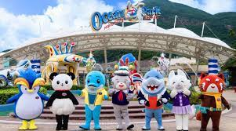
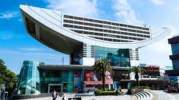
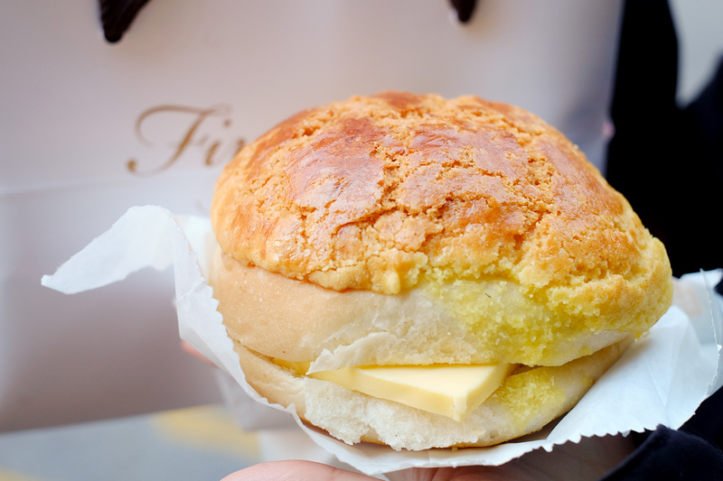

About Hong Kong Tourism
Hong Kong is an international metropolitan. Many tourists visit from the globe every year.
This tour guide will introduce some of the Hong Kong's famous landmarks, old transport: Tram and local food culture.
There are many famous landmarks to visit when travelling Hong Kong, for example:
Victoria Harbour
Shown on the background, Victoria Harbour is a natural landform harbour separating Hong Kong Island in the south from the Kowloon Peninsula
to the north. The harbour's deep, sheltered waters and strategic location on the South China Sea were instrumental in Hong Kong's establishment as a British colony and
its subsequent development as a trading centre. The harbour is a major tourist attraction of Hong Kong. Lying in the middle of the territory's dense urban region, the
harbour is the site of annual fireworks displays and its promenades are used as gathering places for tourists and residents.
Ocean Park
Ocean Park is a marine mammal park, oceanarium, animal theme park and amusement park situated in Wong Chuk Hang and Nam Long Shan in the Southern
District of Hong Kong. It is the second largest theme park in Hong Kong, after Hong Kong Disneyland. (Click photo below for the website)

The Peak
With some seven million visitors every year, the Peak is a major tourist attraction of Hong Kong. It has views of the city and its waterfront. The
viewing deck also has coin-operated telescopes that the visitors can use to enjoy the cityscape. The Peak Tower incorporates the upper station of the Peak Tram.
(Click photo below for the website) 
The Big Buddha
More instantly recognisable than the Peak Tram, Hong Kong’s Big Buddha is a massive 34-metres high. It was the largest outdoor sitting Buddha
at the time of its construction, and took a whopping 12 years to plan and build.
Hong Kong transport: Tram
Hong Kong Tramways, also known as Ding Ding, is a streetcar system in Hong Kong. It runs from Shau Kei Wan in the Eastern District of Hong Kong Island to Kennedy Town in
the Central and Western District. There is also a circular branch line to and from Happy Valley. It carries an average of 180,000 passengers per day. The only existing
tram system that uses all double-deck trams. The Hong Kong Tram was put into service in 1904. It is one of Hong Kong's long-standing motorized public transportation
vehicles. It is not only a landmark on Hong Kong Island, but also a famous tourist attraction for tourists from other places.
There are 26 trams in the first batch. The tram bodies are manufactured in the UK and delivered to Hong Kong in the form of components before being assembled in local workshops.
This batch of first-generation trams are all single-layer designs, 10 of which are first-class trams. The center of the body is a sealed type with two rows of benches standing
by the side. The front and rear parts of the car are open design and can carry 32 passengers. The remaining 16 are third-class trams with fully open bodies, no side panels on
both sides, and 6 rows of back-to-back benches, which can accommodate 48 people.
The Hong Kong Tram currently operates six partially overlapping routes connecting Kennedy Town to Shau Kei Wan, serving the public from 5 a.m. to 12 p.m. every day. The
frequency of trams and stations are frequent. On average, trams arrive at the station every 1 minute, and tram stops for all routes are set on the ground. There are currently
7 tram terminals in Hong Kong Tram, namely Kennedy Town, Shek Tong Tsui, Sheung Wan Market (now known as West Point City), Causeway Bay, North Point, Shau Kei Wan and Happy
Valley.
Hong Kong Street Food
We will introduce 3 local foods: Egg tart, Pineapple Buns with butter and Egg waffles.
Egg tart

Egg tart is a Western-style pie with egg paste as a filling; tart refers to a pie with exposed fillings, and a Western-style pie with a sealed crust is a pie.
The method of egg tart is to put the crust in Pour a mixture of sugar, fresh milk, and eggs into the small round pot-shaped cake mold and put it in the oven.
The outer layer of the baked finished product is a crispy crust, and the inner layer is a sweet yellow curdled egg syrup.
Pineapple Buns with butter

Pineapple bun with butter was invented by the restaurant itself. It is a food developed purely from pineapple buns. It is made up of pineapple buns cut horizontally
and a thick slice of butter (or cream). The best way to eat pineapple bun with butter is to sandwich freshly baked pineapple buns with cold butter.
In this way, the butter will be melted in the middle of the bag by the heat of the pineapple bun, and the melted butter on the bag's body will turn into golden yellow.
Egg waffles

Egg waffles are an original traditional street snack in Hong Kong. It is said to have appeared in Hong Kong in the 1950s. At that time, there were many cracked eggs in
grocery stores that could not be sold. Because they didn't want to go to waste, some people suddenly thought about adding flour and butter. Wait until it is made into egg paste,
Then it was poured into a mold and bake. The main ingredients of egg waffles include eggs, flour, evaporated milk, and sugar, which are golden brown when finished.